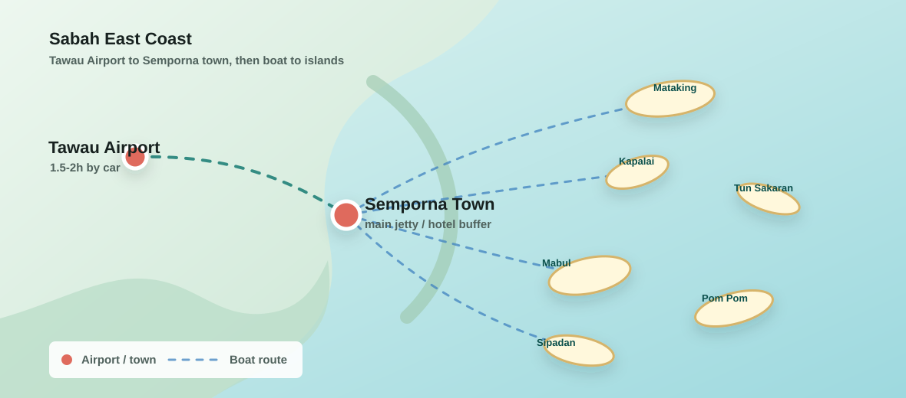

郑州到广州
早班到达可逛沙面、永庆坊、陈家祠和北京路；晚班到达则只安排入住。
7 月 31 日后从郑州出发，广州过渡两天，直飞斗湖进入仙本那海岛段，再经吉隆坡回重庆，最后返郑州。页面已按携程和 Booking 当前可见价格重做为可下单前复核的规划总表。
 仙本那 · 海岛核心
仙本那 · 海岛核心 广州 · 城市过渡
广州 · 城市过渡 重庆 · 返程收尾
重庆 · 返程收尾先从国内城市完成节奏切换，再进入仙本那；返程通过吉隆坡和重庆拆开长途飞行压力。
机票来自携程当前页面可见价格，广州直飞斗湖是全程关键节点。
| 日期 | 路段 | 推荐班次 | 当前可见价格 |
|---|---|---|---|
| 07-31 | 郑州 -> 广州 | 早班 PN6453 06:10-08:25；低价 ZH8379 22:40-00:50 | 390-400 元/人起 |
| 08-03 | 广州 -> 斗湖 | AK1617 03:30-07:10 直飞 | 1055 元/人起 |
| 08-10 | 斗湖 -> 吉隆坡 | AK5747 12:15-14:55 直飞 | 638 元/人起 |
| 08-12 | 吉隆坡 -> 重庆 | 首屏多为中转，山东航空经济南 04:05-17:25 | 1076 元/人起 |
| 08-14 | 重庆 -> 郑州 | 舒适选 3U8159 14:15-16:00；低价 UQ3510 22:25-00:15 | 550-665 元/人起 |
把高强度安排集中在广州第二天、仙本那三条跳岛线和重庆完整日；其余时间给休息和天气留空间。
早班到达可逛沙面、永庆坊、陈家祠和北京路；晚班到达则只安排入住。
广东省博物馆、花城广场、海心桥，晚上广州塔或珠江夜游，节奏轻松但有仪式感。
上午长隆、白云山或咖啡街区三选一；下午补觉整理行李，晚上前往白云机场附近。
早上 07:10 到斗湖，包车 1.5-2 小时到仙本那。当天只做码头踩点、订跳岛和海鲜晚餐。
第一次下水适应日，穿救生衣，练呼吸管和面镜，不急着深潜。
珍珠岛登山、曼达布湾、军舰岛。带运动鞋、防晒衣、干袋，拍仙本那经典全景。
邦邦岛、马达京、汀巴汀巴，适合拖尾沙滩、浮潜和蜜月照片。
从镇上切换到更安静的住宿，下午只安排日落、拍照和休息。
轻水上项目、桨板、浮潜；若体验潜水，选择正规潜店 DSD，量力而行。
留给天气、体力、晒伤恢复或补拍。不要把深潜安排在飞行日前。
上午包车到斗湖机场，12:15 飞吉隆坡。晚上 KLCC、Pavilion 或阿罗街。
黑风洞半日，下午茨厂街、中央艺术坊、鬼仔巷，傍晚回 KLCC 或 TRX。
若选择早班中转，抵达后只安排解放碑、洪崖洞远观和夜宵，别再排长队。
李子坝、山城步道、十八梯、长江索道或南滨路夜景，火锅尽量别太晚。
上午小面和伴手礼；下午班更舒适，晚班可以多玩但到家会很晚。
差异最大的是仙本那住宿：镇上住 + 多跳岛会很省，水屋/度假村会显著抬高预算。

这些链接保留给下单前复核。携程和 Booking 价格随库存、账号权益和税费变化。
当前可见 390-400 元/人起。
AK1617 直飞，当前可见 1055 元/人起。
3 晚，2 位成人，1 间房。
7 晚，镇上到水屋价格差异最大。